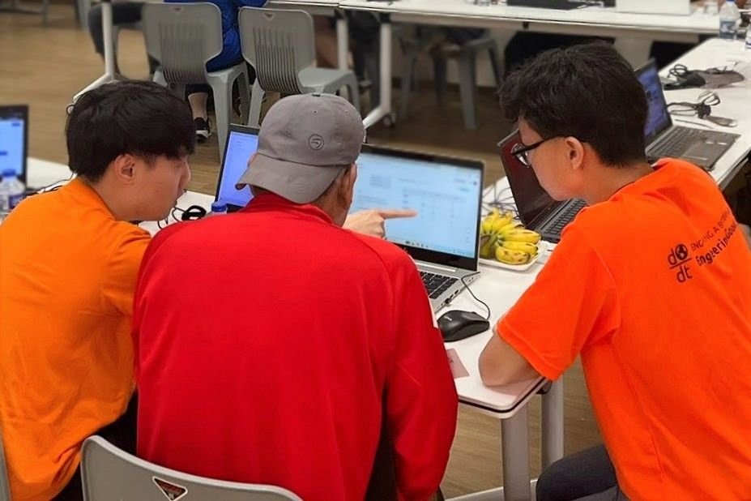

Picture this: a young girl lies on the floor of her family’s one-room rental flat, eyes fixed on a glowing hand-me-down tablet, lost in the world of YouTube’s endless algorithm. Her mother rushes home from her preschool shift, fetches her younger son, showers him, folds the laundry, and cooks dinner. She doesn’t have the time or energy to check what her daughter is watching. The tablet keeps her daughter quiet, occupied, and safe. For now, that is enough.
The COVID-19 pandemic exposed how deeply income shapes digital opportunities. Since then, subsidies for internet access and devices have benefited over 20,000 low-income households [1]. Under the National Digital Literacy Programme (NDLP), every secondary school student received a Personal Learning Device (PLD) [2]. Non-profit organisations such as Engineering Good have also stepped in to refurbish laptops for under-resourced families [3].
Now that the gap in device access has largely closed for most school-going children, a new concern dominates headlines — excessive screen-time.
This is the hidden face of the digital divide in 2025 — no longer just about who owns or has access to devices, but a deeper and quieter gap between those who can shape their digital lives and those who depend on screens like a lifeline.
Data shows that children from lower-income families are 39% more likely to exceed one hour of screen time daily, and that lower parental education is linked to higher screen use. Higher screen time has been associated with lower well-being across multiple domains, including reduced sleep, higher BMI [4], and poorer academic outcomes [5]. It can also negatively impact emotional well-being, self-regulation skills, and socialisation.
In today’s digital age, managing the screen time of our children and youth has never been more critical.
Our Smart Nation drive has succeeded in getting people online through subsidies, digital literacy initiatives, e-government services, and community programmes. Yet we’ve paid far less attention to a growing paradox: the very families we’ve worked hardest to connect are often the least equipped to manage the consequences of that connectivity.
Recent government initiatives such as Parenting for Wellness [6] and the Ministry of Health’s Guidance on Screen Use in Children [7] reflect growing awareness of digital parenting challenges. But good advice alone cannot overcome structural barriers.
These initiatives assume an equal playing field that simply does not (yet) exist. They presume that parents have the time to monitor content; the digital know-how and financial means to use parental controls; the ability to provide engaging offline alternatives; and the emotional bandwidth, after a long day, to manage a tired child and household chores.
For many lower-income families in Singapore, these assumptions crumble under the weight of daily reality.
The Invisible Gaps: Inequality and Screen Time Management
Most of us agree that access to the internet offers boundless opportunities for learning and growth. Many parents hope to use technology to help their children learn new skills and prepare for the digital economy. Yet this often leads children to spend more time on entertainment-related content [8].
While the internet offers hope for greater knowledge, research shows that each additional hour of unhealthy screen use can negatively affect students’ academic performance, reducing achievement by as much as 9–10% for every extra hour in some studies [5]. In our society, where better education leads directly to better jobs, screen-time management becomes one of the levelers for low-income families striving to break the poverty cycle.
Effective screen-time management demands time — to research age-appropriate content, sit with children during viewing, discuss viewed content with children, and actively teach digital literacy skills. Research in the U.S. found that lower parental stress and greater social support were linked to better management of children’s screen time [9]. Yet these are precisely the resources that inequality strips away.
Nearly half of parents with higher socioeconomic status (SES) read to their children regularly, compared to only 14% of lower-SES parents — largely due to differences in time flexibility. Children living in rental units also tend to use smartphones more frequently and with less parental supervision than those in other housing types [10].
For children aged three to six, longer hours with electronic devices are linked to lower scores in applied problem-solving and letter-word identification tests. The negative impact is even stronger when these devices are used without parental involvement for more than half of the time [10].
Children from higher-SES families also enjoy access to more alternative off-screen activities — from enrichment classes to outdoor/indoor play — helping them maintain balanced routines and build important skills outside the digital world [10].
Moreover, parents from higher-SES backgrounds tend to be more tech-savvy. They know how to set up parental controls, check browsing history, and discreetly monitor their children’s online activity. This enables them to manage both screen time and content exposure effectively [11]. In contrast, parents with less technological knowledge often have to rely on time-consuming, less effective forms of supervision.
Tech-savvy parents are also more familiar with online resources and can guide their children toward digital spaces that enhance learning and social development.
Unfortunately, many lower-income jobs require little technological expertise, limiting opportunities for workers to upskill their digital competencies [12]. As a result, their children may see them as unable to provide meaningful guidance online and may choose not to seek help at all. Combined with long working hours or multiple jobs, limited digital literacy further constrains parents’ ability to guide healthy internet use [13].
Beyond Individual Responsibility: Rewriting the Code of Community
At its heart, the struggle over screen-time management among low-income families in Singapore is not about moral failings or poor parenting — it is about resources: time, money, and mental capacity. When parents juggle shift work, caregiving duties, financial stress, and daily survival, the capacity for intentional, quality parenting becomes a luxury. Parenting advice that assumes abundance cannot take root in scarcity.
In a nation as resource-rich as ours, we must ask: Should parenting remain a private, family-bound responsibility, or can we share care resources to uplift the next generation together?
There is hope in the collective actions of communities putting their heads, hearts, and hands together.
Take 6th Sense, for instance. Using an asset-based community development (ABCD) approach, they co-created activities with residents of Kebun Bahru that were both meaningful and within the community’s means. From DIY void-deck obstacle courses to an upcycled fashion walk at Thomson Nature Park, children developed socio-emotional skills and self-confidence that no screen could replicate [14].
In Boon Lay, 3Pumpkins’ Tak Takut Kids Club offers a safe, vibrant space for children to gather and grow. Its art studio, community kitchen, and garden are run by the very children and youth it serves, alongside volunteers and residents. What began as a small creative haven has evolved into a thriving example of community care, where children even volunteer to help each other with schoolwork [15].
In Ang Mo Kio, one mother’s simple idea — serving free breakfast three times a week — has supported school attendance and punctuality. Breakfast Buddy has since grown to include dance and football sessions, providing meaningful after-school engagement [16].
These community initiatives do more than engage children — they create stability, belonging, and trust. As third spaces within the community, they ease parents’ caregiving stress by offering safe, dependable environments and nurturing role models that families can rely on.
System Update: Making Inclusion the Default Setting
Yet the kampung spirit alone cannot redress the structural imbalances that weigh on low-income parents. If we truly want to build a “we-first” society, we must ask harder questions.
Why must some parents choose between safeguarding their children online and putting food on the table? How does our system decide whose skills and which jobs are valued, and thus more deserving of living wages and family-friendly policies? How might we pursue digital advancement without creating a hierarchy of skills—where coding is prized, but labour, care work, and other essential trades are left behind?
As Singapore races toward its Smart Nation goals, are we creating a society that values equity and lived experience as much as efficiency and innovation? We should design systems that allow every family, regardless of SES, to participate meaningfully, equally, and safely in digital life.
Digital inclusion is not complete until every parent and child have both the tools and the capacity to participate in the digital world in ways that enhance their social, cultural, and economic well-being.
The next leap forward in Singapore’s digital story must be about reweaving our social fabric — reviving the kampung spirit for a digital age, where no family faces the glare of the screen alone.
This article is co-written by OpenJio and Engineering Good.
References
[1] Speech for the Debate on the President’s Address by MOS Rahayu Mahzam on Digital Inclusion and A Caring Society
[2] National digital literacy programme has enabled students to have access to digital devices amid Covid-19. Halimah Yacob
[3] Heroes’ Unmasked: They fix donated laptops to give to students from low-income families for learning
[4] Introduction to International Ipreschooler Surveilance Study Among Asians and others (IISSAAR)
[5] Screen Time and Standardized Academic Achievement Test in Elementary School
https://jamanetwork.com/journals/jamanetworkopen/fullarticle/2839927
[6] Parenting for Wellness Toolbox for Parents
https://www.digitalforlife.gov.sg/learn/resources/all-resources/parenting-for-wellness
[7] Guidelines on screen use to be rolled out in Singapore schools
[8] Pre-schoolers’ use of technology and digital media in SIngapore: entertainment indulgence and/or learning engagement
https://doi.org/10.1080/09523987.2021.1908498
[9] The family context of low-income parents who restrict child screen time
[10] Mind the gap- income divide in children’s use of digital devices
[11] Parents’ perspectives on technology and children’s learning in the home: social class and the role of the habitus
https://onlinelibrary.wiley.com/doi/10.1111/j.1365-2729.2011.00431.x
[12] Making Universal Digital Access Universal: lessons from Covid-19 in Singapore https://link.springer.com/article/10.1007/s10209-022-00877-9
[13 ]Young People, Smartphones, and Invisible Illiteracies https://www.researchgate.net/publication/337618224_Young_People_Smartphones_and_Invisible_Illiteracies
[14] Community Heroes: I immersed myself in a rental flat estate to help kids cope with isolation. Here’s what I learnt
https://www.channelnewsasia.com/today/voices/community-heroes-rental-flats-kids-isolation-4637581
[15] ‘A good gang for kids’: She set up Tak Takut Kids Club for at-risk children to have a safe place to go
https://cnalifestyle.channelnewsasia.com/women/3pumpkins-tak-takut-kids-club-ttkc-shiyun-lin-413701
[16] Singaporean of the Year Finalist: Mother of six gives free breakfast to children in Ang Mo Kio